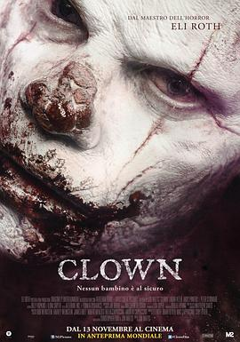

6.1
小丑
Clown
2014
加拿大
评分 6.1
导演:
乔恩·沃茨
演员:
彼得·斯特曼 / 伊莱·罗斯 / 劳拉·爱伦 / 伊丽莎白·怀特梅尔 / 安迪·鲍沃斯
类型:
剧情,恐怖
剧情简介
孩子生日派对的欢声笑语刚刚落幕，房地产经纪人肯特仍沉浸在勉强救场成功的轻松里。他在一栋待售老屋里偶然找到的小丑服，让他度过了儿子期待已久的庆生夜。然而翌日醒来时，那件服装却像长在皮肤上一样紧紧贴着，不论拉链、接缝还是布料，只要他试图撕扯，就会传来刺骨疼痛。肯特从最初的困惑逐渐陷入恐慌，日常生活也开始出现无法用常理解释的变化。他循着服装的来历一路追查，却发现这并非普通戏服，而是一段被人刻意掩埋的古老诅咒的一部分。随着时间推移，肯特的声音、食欲乃至情绪都开始失控，他在不经意的瞬间出现暴躁冲动，甚至对家人保持距离以避免伤害他们。镜头捕捉着他神色渐渐扭曲的细节——从眼神到举止，都透露出某种正在侵入身体的黑暗力量。当事情发展到再也无法掩饰的时候，肯特意识到诅咒并非针对服装，而是针对穿上它的人。屋内的阴影变得更沉重，深夜中传来的压抑声响似乎来自他自己的身体。他需要找到破解诅咒的方法，却也必须抵抗那股正一点点吞噬理智的恶意。影片的紧张感在不断扩大，既源自超自然力量的逼近，也来源于一个普通父亲被迫与自己变化的身体对抗的无助。故事在逼仄的空间、昏暗的灯光和逐渐失控的情绪中展开，让危险在每一次呼吸之间都清晰可感。当肯特终于明白诅咒的真正代价时，他所能做出的选择已所剩无几。影片以一种缓慢而压迫的方式，让恐惧从外表渗入骨骼，直至将这个家庭推向无法回头的境地。